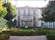

Martine aux Beaux Arts
Mme Monsellato m’envoie faire des remplacements à l’école des
BEAUX ARTS avec Christophe, responsable de l’école qui se situe
face au cinéma . Il me met tout de suite en confiance en
m’expliquant la mission et l’environnement. C’est dans une
petite salle au rez-de-chaussée et un étage ou sont exposées des
œuvres. L’objectif de ma mission est d’accueillir les visiteurs
et surveiller les salles d’exposition.
Suite à cet expérience, Mme Monsellato me demande comment s’est passé cette mission. Je
lui réponds que ce poste me convient.
Martine au JEU DE PAUME et au Musée LAMBINET:
Entre temps j’effectue quelques remplacements dans la salle du JEU DE PAUME au musée LAMBINET au CARRE A LA FARINE. Je partage mon temps avec Corinne afin de remplacer un agent en arrêt maladie.
Martine au CARRE A LA FARINE:
En 2012, Je ne connais pas encore le CARRE A LA FARINE. Le premier jour, je mets presque une demie heure pour atteindre la salle, elle n’est pas signalisée dans les rues de Versailles Je découvre cet endroit destiné à accueillir les artistes peintres et sculpteurs qui viennent exposer leurs œuvres pendant une semaine ou deux afin de les vendre au public Nous partageons cette mission d’accueil.

Au fur et à mesure des journées travaillées dans cet endroit je me projette difficilement pour ce poste. Je crois qu’il n’est pas fait pour moi. J’en parle à ma responsable des ressources humaines. Elle essaie de me rassurer et d’attendre encore un trimestre. De plus nous sommes quatre prétendants au poste.
Je me suis souvent demandé quel est l’histoire de ce lieu pour lequel je poursuis ma carrière professionnelle. Les archives de Versailles constituent une source précieuse que j’ai pu retracer grâce au génie GOOGLE.